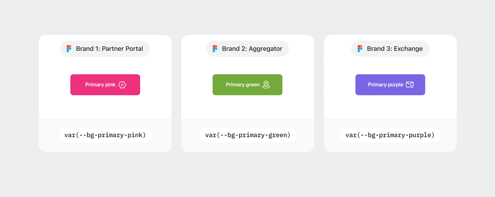
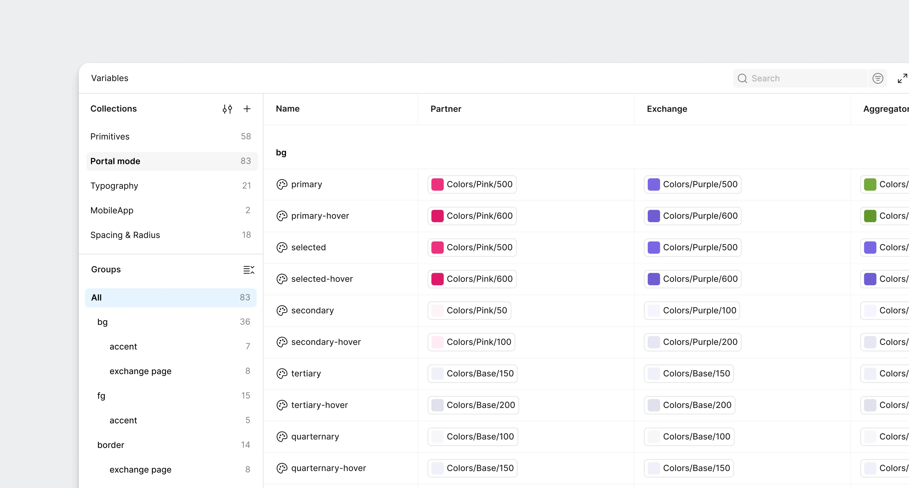
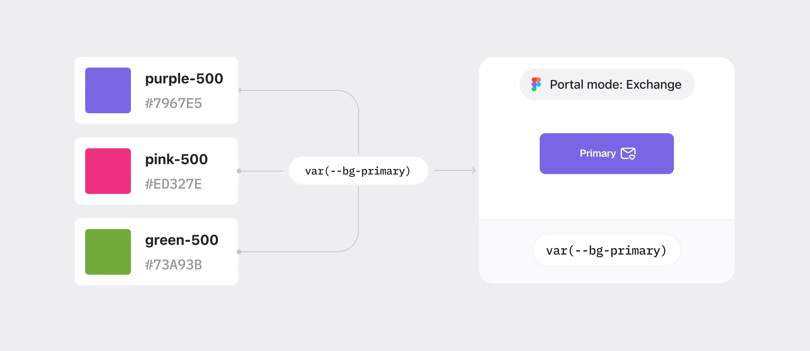
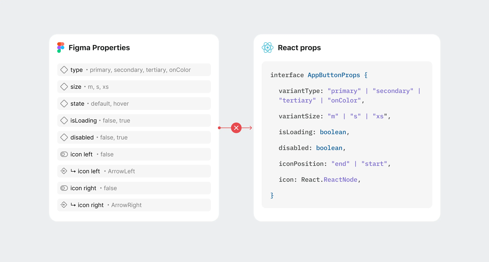
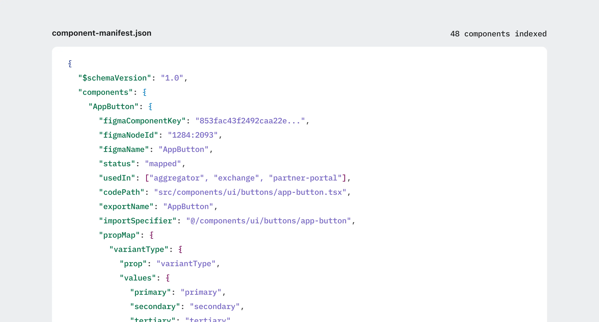
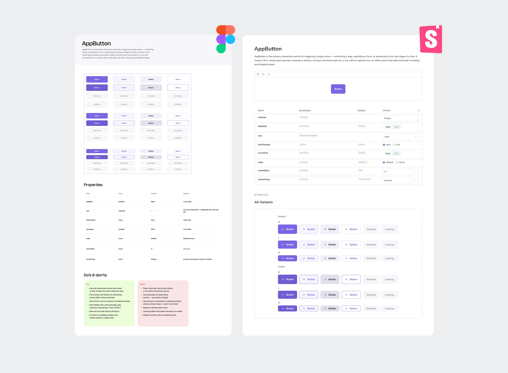

01
Figma Professional
the team was on the Figma Professional plan, with no Extended Collections and no Code Connect
The library was set up before I joined, for one product. I inherited a flat list of variables: the name told you the color, but not its role in the interface. From spring 2026, I owned the design system end to end, from the token architecture to components, specs and code sync.
At AskBefore, I’m the lead product designer and design engineer: I design interfaces and build them in code.
There were two designers. I worked on the products full-time and made the decisions on the library architecture. The second designer joined part-time and worked with the rules and components already in place. The developer and the founder also write code for the project. I chose and implemented the decisions described here.
01
the team was on the Figma Professional plan, with no Extended Collections and no Code Connect
02
I handled the architecture alone, so for every decision I weighed the time to build it and how much work it would add later
03
all three products were already in production, so the library had to be rebuilt together with the existing interfaces
01
Tokens:
give three products their own accents without three sets of components
02
Components:
bring Figma in line with code, so new screens are built from the existing library
03
Specs:
write down the rules, so others can use the components without me
Each product has its own accent: purple for the exchange, green for the aggregator, pink for the partner portal. By spring 2026, all three were already running in code, and in the library each accent had its own set of variants.

Components referenced variables named by color directly. To give a button another product accent, I added one more variant. So the library grew with the number of products.
The component tied behavior to product color. A shared fix had to be repeated in three sets, and the next product would have added a fourth.
I went through the three sets and compared what each color was responsible for. The primary button background has one role, and that role became a semantic token. I worked through the other roles the same way.
Then came two layers: a primitive stores the color value, a semantic token describes the role and references the primitive. I bound components to semantics and ruled out direct references to primitives.

I set up a separate mode of the semantic layer for each product. In Figma, these are collection modes. In code, it’s a data attribute on the product wrapper.
The component stays the same. When the mode changes, it gets different token values: the same button becomes purple, green or pink. The whole library for three products fits in one Figma file.

A new product is one more semantic mode, and components don’t change. Themes live on the primitive layer: the color values change there, the roles stay the same.
The system has 150 color tokens. It has zero custom spacing or radius tokens.
The product was built on Tailwind from the start, so I kept its spacing scale. A custom vocabulary on top of it would add a second name for the same value, and keeping the two in sync would also be on me.
Figma has a connected library with the same scale. Its variables are named like the classes in code: one vocabulary for the design and the implementation.
→ → → This way, I kept the dependency on Tailwind on purpose. The product has no plans to move away from it. If the interface ever needs its own density, that will be the reason to add custom tokens.
Some components existed only in code. Others had different properties in Figma or were missing states. While people read the designs, a conversation fixed this. After we moved to building through MCP, an agent started reading the designs. It took a property from Figma, didn’t find it in code and created it from scratch.
Each description of the component looked fine on its own. The build often ended up with a duplicate.

I took the implementation as the base: these components already worked in the product. I updated the Figma library to match them.
I worked one component at a time: read the code, checked properties and states, then brought the design in line. AI agents with Figma MCP helped find and highlight the differences.
Matching properties wasn’t enough. The agent still needed to be told which code component matches a specific Figma node. Without this link, it kept creating duplicates.
Code Connect exists for this, but it wasn’t available on our plan. I designed my own mechanism: component-manifest.json in the repository root.

The manifest records which library component matches which code component and how Figma variants map to its props. The file is versioned with the code. In the instructions, I set the order: before generating markup, the agent reads the manifest and imports existing components.
The manifest also became a way to check the library for gaps. If an entry is incomplete, something is missing between Figma and code: the component itself, a property or the mapping between them.
If you rename a component or its property and don’t update the mapping, the build fails. The mismatch shows up right away.
For new components, the team agreed on a rule: the manifest entry appears together with the component. I set the format and the rules, and after that, whoever writes the code can maintain the entry.
The manifest has 48 entries now.
A component in the library shows how it’s built. But it doesn’t always show when to use it, which state to pick and how it should behave.
While I built the screens myself, these rules stayed in my head. When others joined, I had to write them down so people wouldn’t have to come to me for explanations.
I wrote component specs and set up Storybook, where designers and developers can see all component properties and states live. It also shows sync progress: a component gets there once it fully matches in Figma and in code.

All specs share one structure. A designer uses it to pick a component for a screen, a developer to check behavior, and an agent gets rules for building.
In the repository, the same knowledge is split into three sections: general design system rules, instructions for the agent and component specs.
43
components published in the production library
3 → 1
component sets and Figma files
3
product surfaces on one system
The system runs in production on three product surfaces. The library has 43 published components.
I merged three color sets into one. Now the product accent is set by a mode of the semantic collection. A new portal doesn’t need a separate copy of the library.
I built the system, and other team members already build screens and prototypes on it. The token and component rules I set held up through these changes: new implementations fit into the same structure.
The flat library was started before me for one product, but I was the one who built the partner portal and the aggregator on it: for every new accent, I added component variants. By spring, I had three sets that later had to be merged into one.
Primitives and roles should have been separated as soon as it was clear there would be more than one product accent. Then new products would have been built on the shared library, and working interfaces wouldn’t have needed migrating to it.